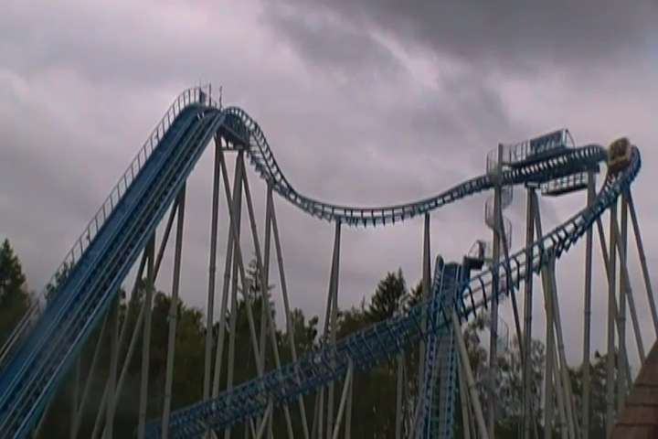
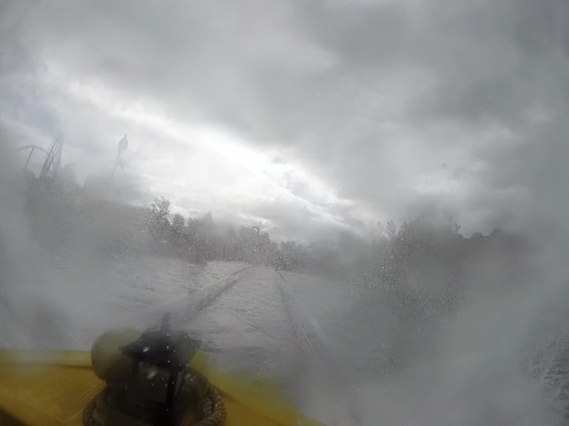
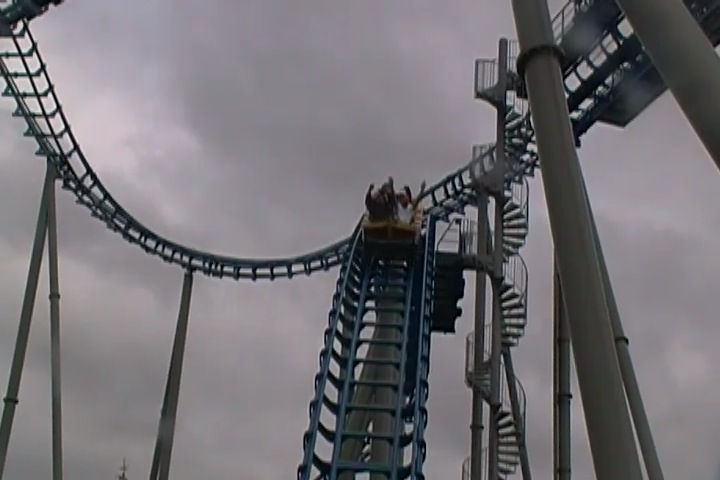
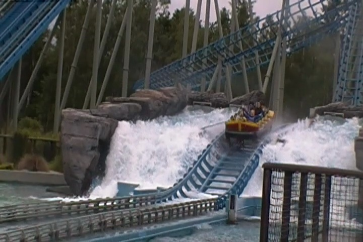

| |
Skatteøen Review

Today at Djurs Sommerland, we'll be reviewing Skatteøen, the park's water coaster. And keep in mind that this is an actual water coaster. Not a water ride that others will claim counts as a credit, but it really doesn't. Anyways, we get in the boats, pull down the lap bar, and we're off. Oh, and your butt will get wet due to the fact that this is in fact, a water coaster. We leave the station and into the boat section. Yeah, it may not be Posideon @ Europa Park (it's Europa Park. They dominate in theming). But there's still some fun theming, showing off some skeletons drinking and a giant octopus that likely sank the ship. Be warned. Octopi are the most intellegent creatures in the universe (the 2nd most intellegent are dolphins), so be careful around the octopus. We avoid pissing it off and head up the lifthill. Not much of a view, but that's not what's important. We crest the top and go down a dip. It's fun and all (Oh, wave hello to Piraten), but then we head down the first drop. A curved drop. It's not crazy, but it's fun. We then head up another curved hill and head into a midcourse brake. Hey, I don't mind too much. See, I told you that this was a credit. We then head down the big straight drop. It's a fun drop into a small little tunnel. WEE!!! We pop out of that into a small little hill that leads us back into the water. SPLOOSH!!! We then float around a turn and back into the station. As a water coaster, it's pretty standard. Most water coasters have this formula. Coaster portion. Shoot the Chutes portion. SPLOOSH!!! And that's exactly what Skatteøen does. I think its technically a little bigger than most water coasters, but mostly, it's just a fun water ride and a soggy credit. Just be warned that you will get wet on this ride.
6/10
Location: Djurs Sommerland
Opened: 2011
Built by: Mack
Last Ridden: June 19, 2014
Skatteøen Photos



Home
|